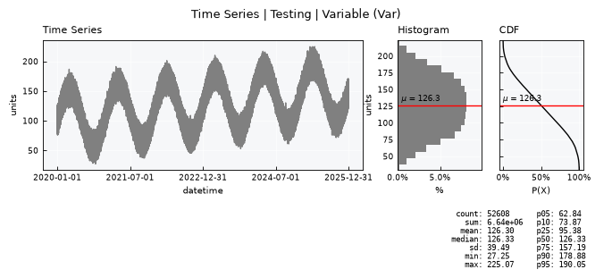
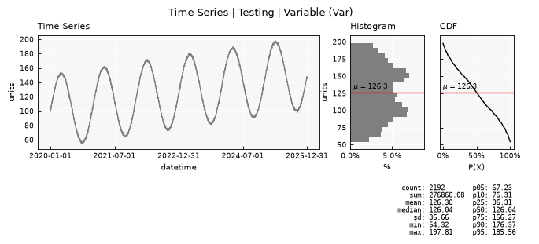
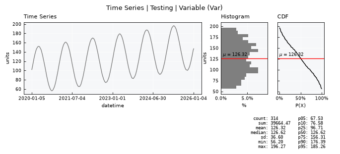
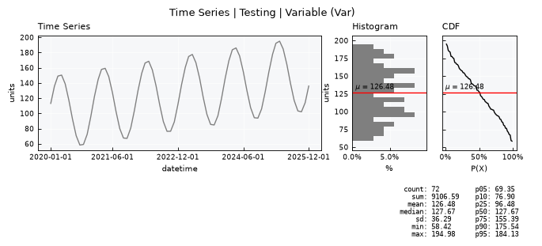
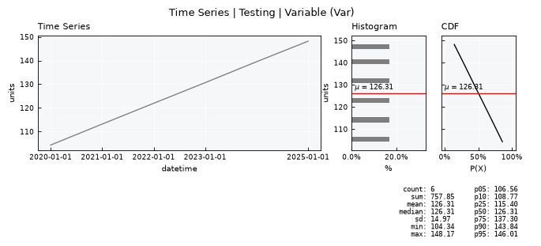
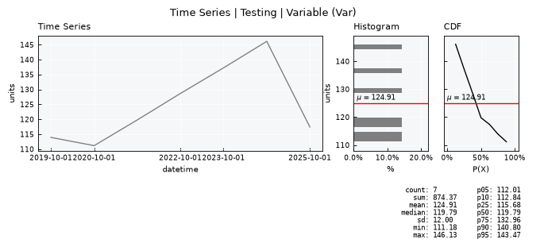
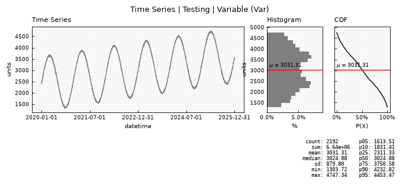

Time Series - Upscaling#
This tutorial focuses on working with upscaling time series data management and analysis using plans.
Notebook setup#
For users running this tutorial as a Jupyter Notebook, this cell must be executed first:
import sys
from pathlib import Path
import pprint
import numpy as np
import pandas as pd
import matplotlib.pyplot as plt
# Install `plans` in `google.colab`.
# Use `pip install plans` for other environments.
if "google.colab" in sys.modules:
import os
os.system(f"{sys.executable} -m pip install -q plans")
# This avoids warnings related to uninstalled fonts
import logging
# Set the matplotlib font manager logger to only show errors (hides warnings)
logging.getLogger('matplotlib.font_manager').setLevel(logging.ERROR)
# define output folder
OUTPUT_DIR = Path("outputs/time-series")
OUTPUT_DIR.mkdir(parents=True, exist_ok=True)
print(f"Outputs will be saved to: ./{OUTPUT_DIR}")
Outputs will be saved to: ./outputs/time-series
The TimeSeries object#
The TimeSeries object is a very primitive class that lives under plans.datasets module.
This object is a child from the Univar object that lives in plans.analyst module. The TimeSeries stores all core methods for working with time series, incluing standardization.
from plans.datasets import TimeSeries
Create and load tutorial data#
Lets first make a perfect time series using .make_synthetic_tsn() method and save it to a CSV file.
This method makes a Trend-Seasonality-Noise archetype time-series:
# make synthetic TSN (Trend-Seasonality-Noise) time-series
df = TimeSeries.make_synthetic_tsn(
start="2020-01-01",
end="2026-01-01",
base=100,
freq="1h",
trend=0.001,
noise_sd=4.0,
amplitude=50,
seasonal_period="YS",
minor_amplitude=20,
minor_seasonal_period="D"
)
# Export CSV file
file_csv = OUTPUT_DIR / "time_series.csv"
df.to_csv(file_csv, sep=";", index="False")
print(f"Saved to: {file_csv}")
Saved to: outputs/time-series/time_series.csv
Call the .load_data() method for loading from CSV file:
ts = TimeSeries(name="Testing", alias="tst")
ts.load_data(
file_data=file_csv, # file path
input_dtfield="datetime", # name of datetime field
input_varfield="level", # name of variable
in_sep=";", # input separator
filter_dates=["2020-01-01", "2026-01-01"] # filter dates
)
Finally, view the loaded data:
ts.view_specs["n_dates"] = 5
ts.view()

Upscaling time series data#
Upscaling, also known as aggregation, is the process of changing data from a finer resolution to a coarser resolution.
The core of this process is the upscaling function, which can be any arbitrary statistic or function applied to the finer scale.
In the TimeSeries object, the upscaling function is encoded by the .agg attribute, which holds pre-defined typical aggregation methods.
Check what is the .agg attribute:
ts.agg
'mean'
The .scale_up() method#
The .scale_up() method allows the upscaling to other time resolutions, using the freq parameter flag, a Pandas-like string.
Common options include:
hfor hourly frequencyDfor daily frequencyWfor weekly frequencyMSfor monthly/start frequencyQSfor quarterly/start frequencyYSfor yearly/start frequency
More options and details can be found in the Pandas documentation on offset aliases.
The full signature is:
scale_up(self, freq, bad_max, inplace=True)
freq: the target Pandas-like frequency alias (explored in detail below).bad_max: the maximum number ofBad(null) records tolerated inside a single aggregation window. Windows exceeding this threshold are dropped from the result.inplace: controls what the method returns (see next section).
inplace=True vs inplace=False#
inplace=True(default): overwritesself.dataand all derived statistics (stats_df,freq_df,weibull_df) directly on the current object. The method returnsNone.inplace=False: leaves the original object untouched and instead returns a brand-newTimeSeriesobject — an exact copy of the parent (samename,alias,code, units,agg, etc.) but holding the upscaled data. This is the recommended mode for tutorials and exploratory analysis, since it lets you keep the original series around for comparison.
This tutorial uses inplace=False throughout, so ts (native hourly resolution) stays available for comparison at every step.
Anchoring: a key detail of freq#
Not all freq aliases behave the same way regarding where each aggregation window starts and ends:
Data-start-anchored frequencies are plain multiples of a base unit, e.g.
"5D". Bins are chunked every N units starting from wherever the series begins — not from a fixed calendar boundary.Calendar-anchored frequencies (
W,MS,QS,YS, etc.) snap to fixed real-world boundaries, regardless of where the data starts.
This distinction matters a lot in practice and is demonstrated in the examples below.
Upscale from native to daily resolution.
The bad_max parameter tells how many null values in native resolution is allowed to be ignored.
ts_daily = ts.scale_up(freq="D", bad_max=6, inplace=False)
ts_daily.view()

Pentad upscale (data-start-anchored)#
A pentad is a 5-day period. Since "5D" is a plain multiple of the base D unit, it is data-start-anchored: the first bin starts exactly at the first timestamp of the series, and every following bin is chunked every 5 days from there — not from a fixed calendar boundary like the 1st, 6th, 11th, etc. of the month.
This is fine when the series happens to start on day 1 (as in this synthetic, “perfect data” example), but keep in mind that a series starting on, say, the 3rd of the month will produce pentads offset from the classic meteorological convention.
ts_pentad = ts.scale_up(freq="5D", bad_max=6, inplace=False)
ts_pentad.view()
Weekly upscale (calendar-anchored)#
Unlike "5D", the "W" alias is calendar-anchored: it always snaps to fixed weekly boundaries, regardless of where the series starts.
By default, "W" means "W-SUN" — weeks ending on Sunday. You can anchor to any weekday with a suffix: W-MON, W-TUE, W-WED, W-THU, W-FRI, W-SAT, W-SUN.
# default weekly (weeks ending Sunday)
ts_weekly = ts.scale_up(freq="W", bad_max=6, inplace=False)
ts_weekly.view()

# weekly anchored to Monday-ending weeks instead
ts_weekly_mon = ts.scale_up(freq="W-MON", bad_max=6, inplace=False)
ts_weekly_mon.view()
Upscale to monthly resolution
ts_monthly = ts.scale_up(freq="MS", bad_max=6, inplace=False)
ts_monthly.view()

Upscale to yearly resolution
ts_yearly = ts.scale_up(freq="YS", bad_max=2, inplace=False)
ts_yearly.view()

Hydrological year upscale#
Just like weekly, the yearly alias is calendar-anchored, but the anchor month is also configurable. Plain "YS"/"YE" default to the calendar year (start Jan 1 / end Dec 31), but appending a month suffix defines a custom year boundary — exactly what’s needed for a hydrological (water) year.
For example:
"YS-OCT"→ year starting October 1 (the common US water-year convention: Oct 1 – Sep 30)"YE-SEP"→ year ending September 30 (equivalent boundary, expressed as an end date)
The suffix month, combined with the YS-/YE- prefix, determines whether that month is the start or the end of the bin. Hydrological year conventions vary by country and basin (e.g. Oct–Sep, Sep–Aug), so pick the suffix that matches your region.
# hydrological year, Oct-Sep (e.g. US water-year convention)
ts_hydro_year = ts.scale_up(freq="YS-OCT", bad_max=2, inplace=False)
ts_hydro_year.view()

Because the agg attribute is the ‘mean’, the mean across all scales is preserved
ts.stats_df.head(4).iloc[2]
statistic mean
value 126.30478
Name: 2, dtype: object
ts_daily.stats_df.head(4).iloc[2]
statistic mean
value 126.30478
Name: 2, dtype: object
ts_pentad.stats_df.head(4).iloc[2]
statistic mean
value 126.334163
Name: 2, dtype: object
ts_weekly.stats_df.head(4).iloc[2]
statistic mean
value 126.319958
Name: 2, dtype: object
ts_monthly.stats_df.head(4).iloc[2]
statistic mean
value 126.480365
Name: 2, dtype: object
ts_yearly.stats_df.head(4).iloc[2]
statistic mean
value 126.308781
Name: 2, dtype: object
ts_hydro_year.stats_df.head(4).iloc[2]
statistic mean
value 124.910471
Name: 2, dtype: object
Changing the agg to represent other upscaling function
ts.agg = 'sum'
ts_daily_new = ts.scale_up(freq="D", bad_max=6, inplace=False)
Check the new upscaling function results
ts_daily_new.view()

ts_daily_new.stats_df.head(4).iloc[2]
statistic mean
value 3031.314712
Name: 2, dtype: object
Recap: freq anchoring cheat sheet#
|
Meaning |
Anchoring |
|---|---|---|
|
daily |
data-start-anchored |
|
pentad (5-day) |
data-start-anchored |
|
weekly, ending Sunday |
calendar-anchored |
|
weekly, ending Monday |
calendar-anchored |
|
monthly, start |
calendar-anchored |
|
quarterly, start |
calendar-anchored |
|
yearly, calendar (Jan–Dec) |
calendar-anchored |
|
hydrological year (Oct–Sep) |
calendar-anchored |
As a rule of thumb: plain multiples of a base unit ("5D", "10D", …) chunk relative to the data; named calendar units (W, MS, QS, YS, …) snap to fixed real-world boundaries and can be further anchored with a weekday or month suffix.